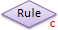
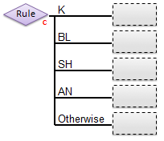
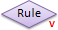
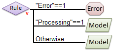
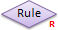
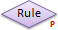
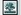

Hierarchical Model Builder
Introduction
The Hierarchical Model Builder (HMB) is used to create Model Selector models which can be used to perform decision tree operations. These models are used for applications like:
- Local Regression Models: Badly non-linear data, or data which contains separate "domains" may require models which are specific to the each of the different sub-domains in the data (For example, when different solvents or operation conditions each require a specific "local" model to achieve the necessary accuracy.) A hierarchical model can be used to first determine which sub-domain you are in, then apply the appropriate local model.
- Classification Decision Trees: Complicated classification problems often can not be solved using a single classification model (PLSDA, SVM, SIMCA) but instead require the problem to be broken down into sub-groups with individual models handling the increased detail of the problem. A hierarchical model might start by selecting between general categories, then sub-models (possibly including additional hierarchical models) would sub-divide those general categories using increasingly specific classification models.
- Input and Output Filtering: In some cases, prior to applying a model, the input data should be tested for appropriate conditioning (e.g. insufficient signal or an "invalid data" flag variable being set). In others, the output of a model should be tested for being outside appropriate limits before returning the result. Hierarchical models can be used to first test the raw input data for specific conditions or to test the output of a regression, classification, or projection (PCA, PARAFAC, etc.) model.
To start the interface run the 'modelselectorgui' function from the Matlab command line:
modelselectorgui
Hierarchical Model Builder Interface
The HMB interface comprises a set of toolbar buttons, a set of node tools containing different nodes used to build a model, a model canvas on which the hierarchical model is built, and a Model Cache pane from which models and data can be added to the hierarchical model canvas.
The model canvas is read from left to right. Data is first passed through the root (left-most) rule node and the results from that decision node are used to select one of the branches to the immediate right of the root node. Each of these branches can either be an "end point" node, defining what output should be given for the corresponding condition, or another decision rule node, with additional branches to its right.
To begin defining a hierarchical model, a root rule node must be defined by either dragging a model from the Model Cache pane onto the root (left-most) rule node or by choosing to use a variable-based rule (See the introduction to Rule Nodes below.)
With the root rule defined, the branches can be specified by dragging an End Node or Rule Node from the node tools toolbar into the empty box at the end of each branch. An end node defines the end of processing and specifies that the given output should be returned. An additional rule node specifies that a sub-branch test should be performed (e.g. to further dissect classes or conditions.)
Introduction to Node Types
Hierarchical models are built from one or more rules (decision nodes) plus end nodes for each condition tested by the rule nodes. Rule nodes decide which of the branches underneath it should be selected. End nodes are at the ends of each branch and define what should be returned as a "prediction" for any sample that arrives at the end of that branch.
Rule Nodes
Rule nodes (also known as decision nodes) can be one of several types depending on what is being tested to decide which branch to follow:
- Classification Test-Based Rule - chooses a branch based on the class predicted by a classification model (PLSDA, KNN, SIMCA, SVMDA) from the input data. The number of branches of a node of this type is defined by the number of classes defined in the classification model. There will be one branch for each class defined, plus one branch which is used if none of the classes are selected. 
- The following is an example of a classification model-based rule before end-points have been assigned. The given model had four classes defined (K, BL, SH, AN) plus the additional "otherwise" branch used if none of the other classes is selected.
- 
- Note: In the case of PLSDA classification models, a test sample will not be assigned to any of the model's classes if its Q or T2 value (reduced) exceeds the threshold value assigned in the option "plsdaqlim" or "plsdat2lim". It will be assigned to the "Otherwise" decision branch. The default values for these options = 3. This can lead to different prediction results when compared to the PLSDA model's predictions based on most-probable class, as used in the confusionmatrix for example.
- Variable Test-Based Rule - chooses a branch based on the state of the raw input data (rather than outputs of models.) Each branch is given a test condition that defines: a variable to test, a comparison operator, and a value to compare to. Variables to test can be defined using either a string (in double-quotes, e.g. "Toggle_A") which will select the variable of the raw data that has a matching label or an axisscale (given as a value inside square brackets, e.g. [123.4] ) 
- The Test Condition for each branch is defined by clicking on the end-point and entering a valid string into the Test Condition property for the branch. Test conditions are evaluated sequentially, so the first branch test condition that is met is selected, even if a subsequent branch's test condition would also be met. For more information, see Test Conditions below.
- 
- Regression or Projection Test-Based Rule - chooses a branch based on the predictions of the given (non-classification) model from the input data. Any model type that outputs a DataSet object or a standard prediction including, but not limited to regression models (PLS, PCR, MLR, CLS), decomposition models (PCA, MCR, PARAFAC), or other "transformation" models (trendtool).  
- Like with Variable Test-Based Rules, Regression and Projection Test-Based rules also require a Test Condition string. These rules consist of a prediction selector (saying which predicted y-value or which component score should be tested), a comparison operator, and a value to compare to. For more information, see Test Conditions below.
End Nodes
End nodes define an output to be returned when a given branch is selected. There are several different types of outputs that can be used and the exact choice of output depends on the application. Possible end nodes include:
- Model - Specifies that the given model should be applied to the input data and the results returned as the output. With many model types, the user also has the option to select specific part of the model to return (e.g. predictions, Q residuals (reduced), Hotelling T^2 (reduced), etc) by clicking on the "Choose Outputs" button when the end node is selected. If outputs are not specified, the entire prediction structure will be returned.
|
Hint: If no outputs are specified from a model end node, the output of the hierarchical model will appear to be identical to the result obtained when a simple model of the same type was applied. Thus, a hierarchical model without any output selection can be used in place of any standard model type in many applications! |
- Value - Returns one or more specific, fixed numeric values. Outputs can be a single scalar value, or a row vector (specified by supplying a comma-separated list of numbers.) This output is used when a numeric flag is needed for an application (0 means failure, 1 means success) or as a specific limit (0% or 100%, for example) when "thresholding" a prediction. Example value: 99,0,0 to return a three-element vector of the values 99, zero, and zero.
- String - Returns a string as output. This output is used when a string response is expected (such as "fail" or "pass") or to specify an alternative name for a class (when a classification model is used for the rule node but the classes specified in the model do not match what is desired to be displayed.)
- Error - When encountered, this end node does not usually return a value but instead throws an error. In run-time application of models, such errors are often reported back to a distributed control system (DCS) or into a log file and will often cause a system to stop processing and set an alarm. These are useful to triggering alarms for particularly bad scenarios such as a hardware failure.
In most cases, all the end nodes of a hierarchical model will output the same type (all numeric, all strings, all model predictions) but this is not necessarily a requirement. However, it is strongly recommended that consitent end-node types be used to make the application programming easier.
Changing End Node Options
Once end nodes have been defined, the exact values to be returned and other options for the given output can be defined by clicking on the end node and using the controls in the settings box that appears. For example:
Test Conditions
With Variable and Regression/Projection test-based rules, each branch must have a "test condition" defined that specifies when the given branch will be selected. Test conditions are set by clicking on the end node or rule node for a given branch, and entering a valid condition string in the Test Condition edit box.
The string test condition must follow the general format:
"variable_name" comparison_operator value
or
[axisscale/index] comparison_operator value
where "variable_name" and [axisscale/index] are selectors specifying what input or output to test and comparison_operator is a boolean comparison operator from the set: == ~= < > <= >=
The top branch test is performed first. If the test is false, then the next branch test down is performed. If all of the branch tests return false, then the final "otherwise" condition (which must always be supplied) is selected.
Variable Test Conditions
For variable test-based rules, the "variable_name" and [axisscale/index] properties refer to the input data variables (columns) and must include the double-quotes or square brackets as shown.
If a "variable_name" is supplied, it is assumed that the input data has a variable named variable_name and if it is not found an error will be thrown.
If an [axisscale] is supplied, the axis scale on the variables (e.g. wavelength, energy, time, etc) will be examined for the specified value. If the specified value is outside the range of data axis scales, an NaN will be used. If the exact value isn't found, but nearby values are, a linear interpolation will be attempted.
If no axis scale is set on the variables, a value in square brackets [index] is assumed to be an integer index so [18] is assumed to mean the 18th column of the input data.
Regression and Projection Test Conditions
For Regression test-based rules (i.e. tests based on a regression model that predicts a y-value), the [index] form of the conditional test specifies which y-value column to test. So:
- [2] < 10
would test if the second predicted value of the regression model (y-column #2) is < 10.
For Projection test-based rules (i.e. tests based on a model that calculates scores such as PCA, PARAFAC, or MCR), the [index] form of the conditional test specifies which component score to use in the test. So:
- [2] < 10
with a PCA model would test if the scores on the second PC are < 10.
The "variable_name" form of the tests are not currently implemented for regression or projection based rules except for the case of either "Q" or "T2" for testing based on the sample's Q residual or Hotelling's T2 value (for those model types which calculate Q or T2). Here these refer to Q and T2 reduced. Thus, for models you can use "Q" or "T2" (or lower case) or use the square bracket version [1], [2], etc. These are the only choices. For a regression model the [i] version refers to the y prediction value (i can be > 1 for multivariate y). For projection based models [i] refers to the i-th column of the predicted scores, the i-th component score.
Order of Tests and Logical Operators
There is no option to include logical operators (and, or, not) in the test conditions, so the order of the tests should be arranged to account for overlapping cases first recalling that tests are performed sequentially. For example, to test for three cases:
[Case A] x < 10 [Case B] x >= 10 and x <=20 [Case C] x > 20
could be performed:
Test 1: x < 10 [Case A] Test 2: x <= 20 [Case B] Test 3: (otherwise) [Case C]
Note that each test is performed on a sample only if the above test(s) were false. So Test 2 in this example catches only Case B (NOT Case A) because all samples for Case A were trapped in Test 1. In essence, Test 2 is really (x<=20) AND NOT(x<10) and Test 3 is really NOT(x<=20) AND NOT(x<10)
The following approach would NOT work for these cases:
Test 1: x < 20 [Cases A & B!!!] Test 2: x < 10 [NOTHING since B was trapped in Test 1] Test 3: (otherwise) [Case C]
An alternative approach that WILL work:
Test 1: x < 10 [Case A] Test 2: x > 20 [Case C] Test 3: (otherwise) [Case B]
Automatic Hierarchical Model Classification
Creating automated HMB models for classification is available starting in Version 9.2. The models are made using the AHIMBU (Marchi et al., 2022) class-splitting approach, which can be done using our hmac function (see hmac for more details). The interface for building these models can be opened by clicking on the  button in the toolbar:
The user needs to provide a couple of necessary items for this interface in order to build the model: an X-block (Dataset or matrix) and class information. The class information can be provided in the X-block if the X-block is a Dataset, otherwise, the class information can be provided by clicking on the 'Load' button for 'Classes' (can be a Dataset or vector of integers). If the X-block is a Dataset object, the user is able to switch between class-sets or select class groupings for class group modeling. Cross-Validation and X-block preprocessing settings are provided. These settings will be used at each decision node in the resulting hierarchical model.
Once the data is provided, click on the 'Calibrate' button to perform the AHIMBU algorithm. Once completed, the resulting hierarchical model will be populated in the HMB canvas:

Applying Hierarchical Models to New Data
Hierarchical models can be applied to new data in several ways. If the new data contains only one sample (row), the output will be of type defined by the selected end-node (string, numeric, prediction object, DataSet object). If multiple samples are present, the prediction results will be either a DataSet object or a cell array containing outputs for each row of the new data. In the multiple sample case, the type of output depends on the types of end-nodes selected. If any end-node produces a value or a is an applied model with selected outputs, a DataSet object will be created. Otherwise, the output will be a cell array of items (e.g. strings).
Applying in the Hierarchical Model Builder
Once a model is built or loaded into the HMB, data can be dragged from the model cache, workspace, or file system onto the canvas of the HMB. NOTE: if you drag data onto any NODE on the canvas, the HMB will assume you want to replace that node with what you are dragging. So drag the object into the white-space of the canvas.
The model will be applied to the data and the results will be displayed either as a DataSet object in the DataSet Editor, or in a simple pop-up text window (depending on the type of outputs that are present in the hierarchical model).
Applying in the Workspace Browser
If a hierarchical model is saved to the base workspace, it will appear in the Solo/PLS_Toolbox Workspace Browser. Other data objects or files can then be dragged onto the model's icon to apply the model to the data. Note that if the model contains any "error" end-nodes and they are selected for any samples, the error will be "thrown" and an error dialog will appear to indicate the model application failed (with the indicated error)
Applying at the Matlab Command Line
For PLS_Toolbox users, a hierarchical model can be applied to new data using the standard EVRIModel Objects apply command. Assuming the model is stored in the Matlab workspace as a variable named "model", the following would apply that model to new data:
pred = model.apply(newdata);
The pred object output will be either a single object (if newdata contains only one row), or, for multiple rows, a cell array or a DataSet object. As with applying data in the workspace browser (above), any error end-nodes selected from the model will be thrown as Matlab runtime errors.
Applying in Solo_Predictor
Hierarchical models can be applied to new data in Solo_Predictor like any other model using the standard scripting call:
pred = data|model;
The output "pred" will vary depending on the end-node selected according to the rules described above.